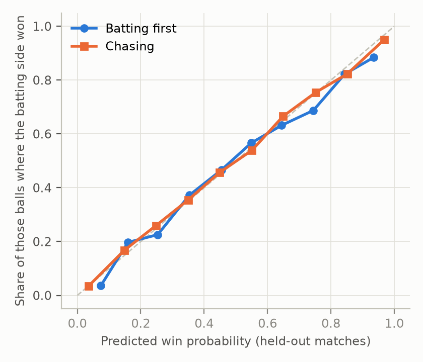
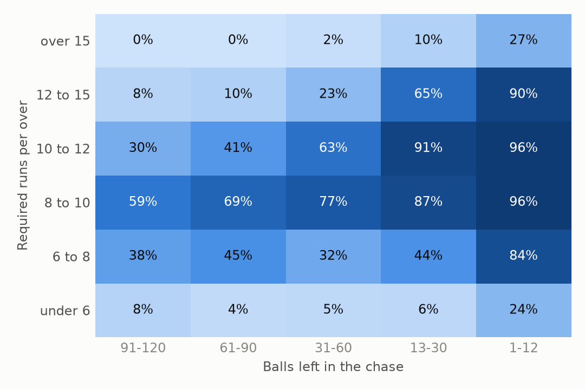
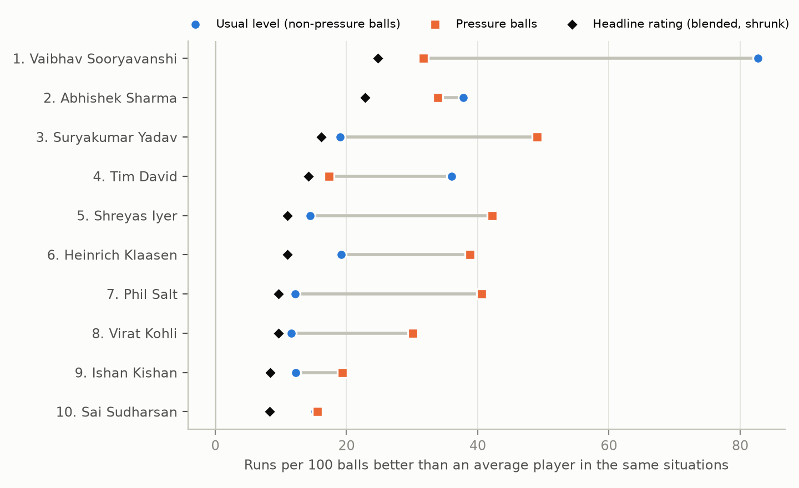
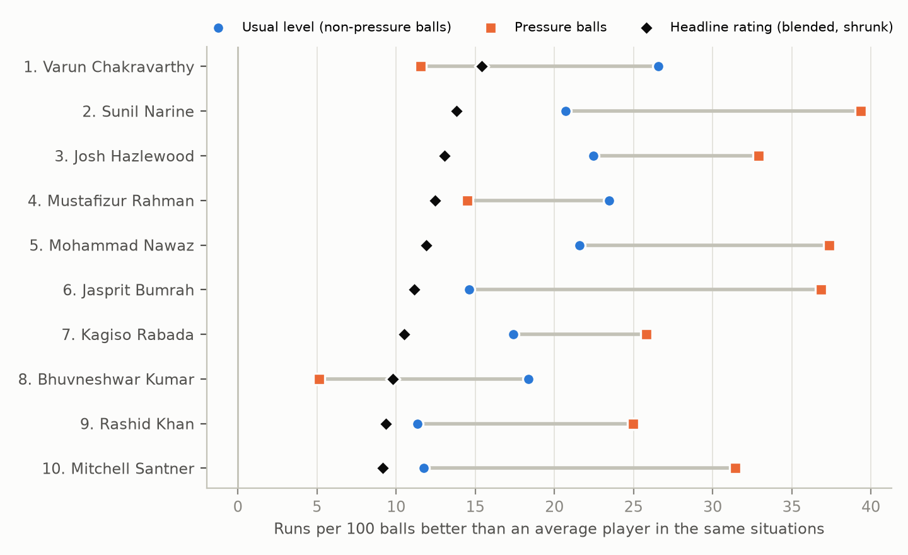
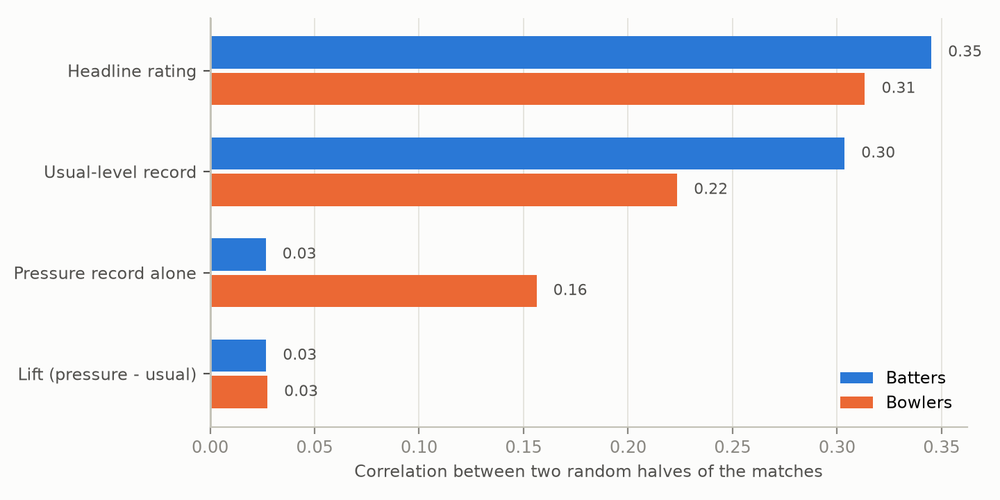
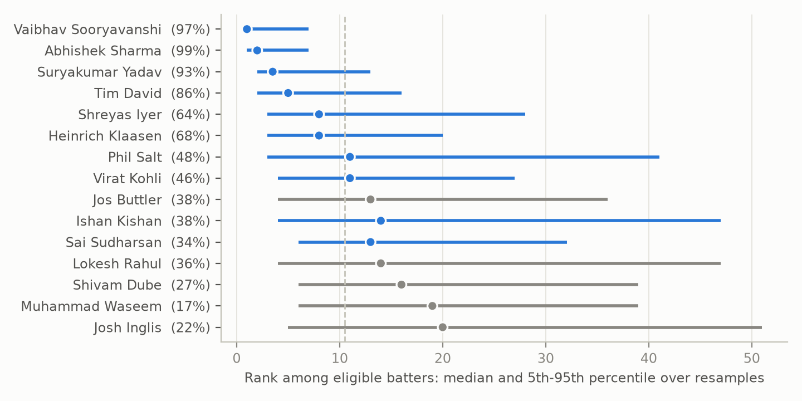
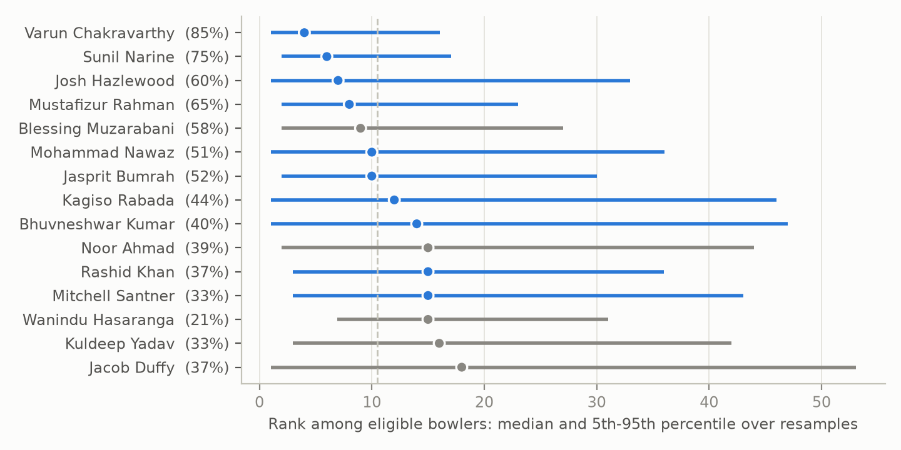

SupeRR Selector Season 2 · Round 1 methodology report
Who delivers when it matters?
A leverage-based pressure rating for T20 batters and bowlers
Summary
Pressure is leverage. For every ball we compute how far the batting side's win probability is expected to swing on that delivery. The top 20% of balls by this measure are pressure balls (37,480 legal deliveries). On them the result moves 3.4 percentage points per ball on average, against 1.0 on ordinary balls.
Performance is runs above expectation. Each ball is scored against what an average player produces in the same situation against the same opposition, with dismissals priced by a data-fitted resource table. This works identically for batters and bowlers.
A personal 'clutch lift' does not repeat. Split the matches into random halves and a player's pressure-minus-usual gap in one half says nothing about the other (correlation 0.03 for batters, 0.03 for bowlers). So the rating treats the pressure record and the usual-level record as two noisy readings of one player and blends them by how informative each is.
Reliability is enforced, not assumed. To be listed a player must also have been above average on pressure balls themselves and must show no credible drop from their usual level. Every rank comes with a resampling interval and a probability of belonging in the top 10.
Rank
Batters
Rating
P(top 10)
1
Vaibhav Sooryavanshi
24.8
97%
2
Abhishek Sharma
22.8
99%
3
Suryakumar Yadav
16.1
93%
4
Tim David
14.2
86%
5
Shreyas Iyer
11.0
64%
6
Heinrich Klaasen
11.0
68%
7
Phil Salt
9.7
48%
8
Virat Kohli
9.6
46%
9
Ishan Kishan
8.3
38%
10
Sai Sudharsan
8.2
34%
Rank
Bowlers
Rating
P(top 10)
1
Varun Chakravarthy
15.4
85%
2
Sunil Narine
13.8
75%
3
Josh Hazlewood
13.1
60%
4
Mustafizur Rahman
12.5
65%
5
Mohammad Nawaz
11.9
51%
6
Jasprit Bumrah
11.2
52%
7
Kagiso Rabada
10.5
44%
8
Bhuvneshwar Kumar
9.8
40%
9
Rashid Khan
9.4
37%
10
Mitchell Santner
9.2
33%
1. Data and preparation
The pack lists 883 matches; 867 have ball-by-ball records (200,999 deliveries). The other 16 were abandoned without a ball bowled.
We drop 38 super-over deliveries and 38 rain-revised matches (revised overs or target, or a DLS result), because their targets and resources change mid-innings and would corrupt the match state.
That leaves 195,707 deliveries from 829 matches (361 IPL, 438 T20I, the rest emerging-team tournaments), 22 Jan 2022 to 01 Nov 2026.
For every delivery we rebuild the state before it is bowled: score, wickets, legal balls left, and in a chase the target and required rate. As a check, the rebuilt totals reproduce the official margin in 803 of 805 decided matches; the 2 exceptions differ by one run or one wicket in the source data.
2. Defining pressure
A ball is high-pressure when the match result hinges on it. We measure that directly rather than with hand-picked thresholds on required rate or wickets, which would need a different rule for every phase and would count a hopeless chase the same as a live one.
Win probability. Chasing: a monotone gradient-boosted model on runs required, balls left and wickets in hand (more runs needed can never help, more balls or wickets can never hurt). Batting first: a logistic model on the projected total, which is the current score plus the runs an average side adds from that many balls and wickets.
Honest accuracy. With 5-fold validation that holds out whole matches, the chase model scores AUC 0.893 (Brier 0.133) and the first-innings model AUC 0.683 (Brier 0.224). The first innings is inherently harder to call; the chart shows both are well calibrated.
Leverage. For each ball we take the six possible outcomes (dot, 1, 2, 4, 6, wicket) with their league-wide frequency in that innings and phase, and compute the expected absolute change in win probability. Leverage is high only when the game is live and a single ball can move it.
Pressure balls. The top 20% of legal deliveries by leverage (leverage of at least 1.77 percentage points).

Predicted against actual win rate on held-out matches.

Share of chase balls classed as pressure, by required rate and balls left.
The heatmap shows the definition behaves as cricket sense expects without being told to: pressure peaks when eight to twelve an over is needed late in a chase, and falls away both when the chase is easy and when it is already lost.
Legal balls
Avg win-probability swing (pts)
Runs per ball
Wicket
Dot ball
Boundary
Pressure balls
37,480
3.42
1.43
5.7%
34.7%
18.9%
Ordinary balls
149,918
0.96
1.41
5.6%
35.5%
18.6%
Pressure balls move the result several times as much, yet league-wide scoring and wicket rates are almost the same. Pressure changes what a ball is worth, not what the average player does with it, which is why differences between players have to be measured against a situation-specific expectation.
What this definition does not call pressure. 95% of pressure balls are in the second innings (40% of all chase balls, against 2% of first-innings balls). With no target on the board, first-innings leverage is flat: its 10th to 90th percentile range is 0.76 to 1.53 points, against 0.10 to 3.99 in chases. Bowlers defending and batters chasing share the same pressure balls, so the method treats both disciplines symmetrically. Section 7 tests a rule-based alternative that adds first-innings collapses.
3. Measuring performance
Expectation. Two gradient-boosted models predict, for every delivery, the expected runs and the chance of a dismissal. Inputs: innings, over, balls left, wickets down, current and required run rate, how many balls the striker has faced, season, IPL or not, and the opposing team. The batter's version also knows whether the bowler is pace or spin; the bowler's version knows the striker's batting position and handedness.
No self-scoring. Predictions are out-of-fold (5 folds, whole matches held out), so a player's ball never helps set its own expectation. Neither model is told who the player is, or the player's own team, so quality is not explained away.
Price of a wicket. A resource table fitted on first innings gives the expected further runs from any (balls left, wickets in hand). A wicket costs the drop in that figure, capped in a chase at the runs still required.
Bowler impact per ball = (expected runs − runs conceded) + wicket cost × (wicket taken − expected wicket chance). Wides and no-balls count against the bowler; byes, leg-byes and run-outs do not.
Impact is reported per 100 balls. Zero means an average player in exactly those situations; +10 means ten runs better per 100 balls.
4. From balls to a rating
The brief asks how players perform under pressure compared with their usual level. We estimated how much players truly differ in that gap, after removing sampling noise, and the answer for both disciplines is: not measurably (estimated variance -0.0015 for batters and -0.0129 for bowlers, both below zero, so set to zero). A few hundred pressure balls are too few to separate a real clutch effect from luck.
The rating is therefore the posterior mean of a player's true pressure-ball impact under a simple hierarchical model: true pressure level = true usual level + personal lift. The usual-level record and the pressure record are each weighted by their precision (recency-weighted balls divided by ball-to-ball variance), and the result is shrunk towards the average player in proportion to the remaining noise. Because lift variance is zero, a pressure ball and an ordinary ball carry equal weight per ball; had the data shown a repeatable lift, pressure balls would automatically count for more.
Recency. Balls are down-weighted with a half-life of 2 years, since the question is who to back in the next auction.
Proven under pressure. A listed player's own pressure-ball impact must be above zero.
No credible dip. Resampling whole matches 500 times, the chance that the player's pressure impact is below their usual impact must be under 90%.
Consistency is reported as the share of pressure outings (at least 4 pressure balls in a match) with positive total impact. It is shown as evidence, not scored, because it too fails to repeat between halves for batters.
5. Fair comparisons
Eligibility. At least 150 pressure balls faced (batters) or 150 bowled (bowlers), at least 12 pressure outings, and a match on or after 2025-01-01. 66 batters and 80 bowlers qualify.
Sample size. Shrinkage does the work: a player with few balls is pulled towards average, so a short hot streak cannot top the list. The posterior standard deviation is reported beside every rating.
IPL and T20I together. Both are used, because pressure balls are scarce. The expectation models carry the opposing team and an IPL flag, so runs against a weak attack are worth less than runs against a strong one. Section 7 reruns the rating on IPL matches alone.
Match context. Phase, wickets down, run rates and the batter's time at the crease are in the expectation, so openers, finishers, powerplay and death bowlers are each compared with their own situations.
6. Evidence for the top 10
Rating and impacts are runs per 100 balls better than an average player in the same situations. 'Range' is the 5th to 95th percentile of the player's rank over 500 resamples of whole matches.
Batters
#
Batter
Rating ± sd
Pressure balls
Pressure SR
Pressure avg
Usual SR
Pressure impact
Usual impact
Outings above par
Range
1
Vaibhav Sooryavanshi
24.8 ± 6.7
152
219
37.0
224
+31.7
+82.7
73%
1-7
2
Abhishek Sharma
22.8 ± 5.1
461
183
33.7
190
+33.9
+37.8
73%
1-7
3
Suryakumar Yadav
16.1 ± 4.9
549
174
53.1
166
+49.0
+19.0
67%
2-13
4
Tim David
14.2 ± 6.1
286
182
24.8
178
+17.4
+36.0
52%
2-16
5
Shreyas Iyer
11.0 ± 5.5
379
162
61.4
152
+42.2
+14.5
78%
3-28
6
Heinrich Klaasen
11.0 ± 5.8
223
186
41.4
165
+38.8
+19.2
61%
3-20
7
Phil Salt
9.7 ± 5.6
327
183
49.9
169
+40.6
+12.2
79%
3-41
8
Virat Kohli
9.6 ± 5.1
523
149
59.8
145
+30.1
+11.6
72%
4-27
9
Ishan Kishan
8.3 ± 5.2
572
142
40.6
148
+19.4
+12.3
73%
4-47
10
Sai Sudharsan
8.2 ± 5.6
433
142
61.7
151
+15.6
+15.2
78%
6-32
Rated high enough but not listed, because their own pressure record is below average or credibly below their usual level: Jos Buttler (rated 9; pressure impact -2.0, dip probability 87%).

Batters: usual level, pressure record and the blended rating. The rating sits left of both because it is shrunk towards the average player (zero).
Bowlers
#
Bowler
Type
Rating ± sd
Pressure balls
Pressure econ
Pressure wkts
Usual econ
Pressure impact
Usual impact
Outings above par
Range
1
Varun Chakravarthy
Spin
15.4 ± 5.3
416
8.44
24
7.90
+11.5
+26.6
51%
1-16
2
Sunil Narine
Spin
13.8 ± 5.9
358
6.57
17
6.90
+39.4
+20.7
62%
2-17
3
Josh Hazlewood
Pace
13.1 ± 6.1
321
8.24
28
8.26
+32.9
+22.5
63%
1-33
4
Mustafizur Rahman
Pace
12.5 ± 5.8
277
8.25
16
7.71
+14.5
+23.5
52%
2-23
5
Mohammad Nawaz
Spin
11.9 ± 6.5
275
6.57
21
7.33
+37.4
+21.6
66%
1-36
6
Jasprit Bumrah
Pace
11.2 ± 5.7
327
7.49
15
7.20
+36.8
+14.6
52%
2-30
7
Kagiso Rabada
Pace
10.5 ± 5.9
277
9.31
20
9.27
+25.8
+17.4
45%
1-46
8
Bhuvneshwar Kumar
Pace
9.8 ± 5.4
464
9.47
23
7.97
+5.1
+18.4
46%
1-47
9
Rashid Khan
Spin
9.4 ± 5.0
470
7.10
25
7.50
+25.0
+11.4
62%
3-36
10
Mitchell Santner
Spin
9.2 ± 5.7
332
6.52
19
7.72
+31.4
+11.7
64%
3-43
Rated high enough but not listed, because their own pressure record is below average or credibly below their usual level: Blessing Muzarabani (rated 5; pressure impact -15.5, dip probability 100%); Noor Ahmad (rated 10; pressure impact -1.4, dip probability 84%).

Bowlers: usual level, pressure record and the blended rating.
7. Reliability and limitations
Consistency across matches. We split the matches into two random halves 200 times and correlated each measure between halves across eligible players. The headline rating repeats; a rating built on the pressure record alone barely does for batters, and the lift does not at all.

Split-half correlation of each measure.
Does it predict pressure performance? The stricter test: build each estimate on one half of the matches and correlate it with raw pressure-ball impact in the other half. The blended rating is the best predictor in both disciplines. The correlations are modest because half a player's pressure balls is itself a very noisy target.
Estimate built on half A
Batters
Bowlers
Headline rating (pressure + usual level)
0.13
0.21
Pressure-ball record alone
0.07
0.17
Usual-level record alone
0.08
0.16
How firm is each rank? The first three or four batters are secure. Bowlers are closer together, and from about fifth place down in either list the intervals overlap heavily, so adjacent ranks are close calls.

Batters: rank spread under resampling; the label shows P(top 10). Grey = not listed.

Bowlers: rank spread under resampling. Grey = not listed.
Sensitivity. 'Top 10 kept' counts how many of the headline top-rated ten stay in the top ten, out of those still eligible under the variant. Rank correlation is over all players eligible in both.
Change one assumption
Batters: top 10 kept
Rank corr.
Bowlers: top 10 kept
Rank corr.
Pressure = top 30% of leverage
6 of 10
0.99
9 of 10
0.99
Pressure = top 25% of leverage
8 of 10
0.99
9 of 10
1.00
Pressure = top 15% of leverage
9 of 9
1.00
6 of 9
0.97
Pressure = top 10% of leverage
6 of 7
0.64
7 of 7
1.00
Rule-based pressure (crunch chase or collapse)
4 of 4
0.68
7 of 8
0.97
No recency weighting
7 of 10
0.93
7 of 10
0.95
IPL matches only
7 of 8
0.82
6 of 6
0.89
Conservative ranking (estimate minus 1 sd)
10 of 10
0.99
9 of 10
1.00
Pressure record alone (no usual-level prior)
5 of 10
0.60
4 of 10
0.69
Limitations
Pressure here is chase pressure. 95% of pressure balls are second-innings. A first-innings rescue after a collapse is not rewarded as pressure; the rule-based variant above shows how much the lists move when it is.
Ranks are estimates. Posterior standard deviations run from 4.9 to 6.7 runs per 100 balls, larger than most gaps between neighbours. Vaibhav Sooryavanshi has the thinnest pressure sample in the batting list (152 balls).
The rating leans on overall quality. That is what the data support, but it means a player with a genuine, as yet undetectable clutch trait gets little extra credit.
State-based win probability. It ignores team strength, venue, dew and pitch, so leverage is the same for any two sides in the same position.
Opposition is adjusted by team, not by individual. Facing a side's best bowler and its fifth bowler are treated alike beyond the pace or spin flag.
Not measured: fielding, running between wickets for the non-striker, captaincy, and whether a player will actually be available at the auction.
8. What this means for Rajasthan Royals
The same per-ball impact, summed for Rajasthan Royals on IPL pressure balls from 2024 to the latest season, shows where reinforcements matter most. Samples per phase are a few hundred balls, so read these as direction, not precise size.
Discipline
Phase
Royals pressure balls
Royals impact / 100
Other teams
Gap
Batting
powerplay
464
+5.1
+5.0
+0.1
Batting
middle overs
561
+0.9
+4.5
-3.6
Batting
death overs
280
-11.4
+3.2
-14.6
Bowling
powerplay
377
+2.8
-5.4
+8.2
Bowling
middle overs
504
-4.9
-3.8
-1.1
Bowling
death overs
310
-11.5
+1.0
-12.5
Royals' largest shortfall against the other nine teams is in the death overs with the bat (-14.6 per 100 balls) and the death overs with the ball (-12.5).
Royals squad, IPL 2026
Batting rank
Batting pressure impact
Bowling rank
Bowling pressure impact
Vaibhav Sooryavanshi
1 of 66
+31.7
-
-
Shimron Hetmyer
18 of 66
+7.4
-
-
Riyan Parag
22 of 66
-13.8
-
-
Dasun Shanaka
29 of 66
+21.0
-
-
Yashasvi Jaiswal
41 of 66
+4.2
-
-
Sam Curran
42 of 66
+1.2
70 of 80
-27.0
Ravindra Jadeja
44 of 66
+5.8
25 of 80
+2.5
Dhruv Jurel
55 of 66
-24.1
-
-
Jofra Archer
-
-
21 of 80
-19.1
Ravi Bishnoi
-
-
35 of 80
-3.3
Tushar Deshpande
-
-
59 of 80
-0.4
The other 16 squad members have too few pressure balls in the pack to rate.
The listed players with the largest share of their pressure balls at the death are: among the listed batters, Tim David (54% of pressure balls at the death), Heinrich Klaasen (25% of pressure balls at the death), Shreyas Iyer (14% of pressure balls at the death); among the listed bowlers, Mustafizur Rahman (34% of pressure balls at the death), Bhuvneshwar Kumar (33% of pressure balls at the death), Kagiso Rabada (26% of pressure balls at the death).
The pack does not say who will be retained or released, so the lists rank ability under pressure, not availability. The notes below say what each player would add if obtainable.
Batters
1. Vaibhav Sooryavanshi (Rajasthan Royals; usually bats at 2). 84% of pressure balls faced are in the powerplay; pressure strike rate 219 at an average of 37.0, with 221 against pace and 211 against spin. Already a Royal in IPL 2026: the task is to keep this player, not to buy.
2. Abhishek Sharma (Sunrisers Hyderabad; usually bats at 2). 75% of pressure balls faced are in the powerplay; pressure strike rate 183 at an average of 33.7, with 183 against pace and 183 against spin. Royals' gap to other teams in this phase: +0.1 per 100 balls.
3. Suryakumar Yadav (Mumbai Indians; usually bats at 4). 66% of pressure balls faced are in the middle overs; pressure strike rate 174 at an average of 53.1, with 196 against pace and 136 against spin. Royals' gap to other teams in this phase: -3.6 per 100 balls.
4. Tim David (Royal Challengers Bengaluru; usually bats at 5). 54% of pressure balls faced are in the death overs; pressure strike rate 182 at an average of 24.8, with 201 against pace and 130 against spin. Royals' gap to other teams in this phase: -14.6 per 100 balls. This is their biggest gap, so a direct fix.
5. Shreyas Iyer (Punjab Kings; usually bats at 4). 61% of pressure balls faced are in the middle overs; pressure strike rate 162 at an average of 61.4, with 167 against pace and 153 against spin. Royals' gap to other teams in this phase: -3.6 per 100 balls.
6. Heinrich Klaasen (Sunrisers Hyderabad; usually bats at 5). 70% of pressure balls faced are in the middle overs; pressure strike rate 186 at an average of 41.4, with 166 against pace and 212 against spin. Royals' gap to other teams in this phase: -3.6 per 100 balls.
7. Phil Salt (Royal Challengers Bengaluru; usually bats at 1). 65% of pressure balls faced are in the powerplay; pressure strike rate 183 at an average of 49.9, with 194 against pace and 163 against spin. Royals' gap to other teams in this phase: +0.1 per 100 balls.
8. Virat Kohli (Royal Challengers Bengaluru; usually bats at 2). 56% of pressure balls faced are in the powerplay; pressure strike rate 149 at an average of 59.8, with 159 against pace and 132 against spin. Royals' gap to other teams in this phase: +0.1 per 100 balls.
9. Ishan Kishan (Sunrisers Hyderabad; usually bats at 2). 59% of pressure balls faced are in the powerplay; pressure strike rate 142 at an average of 40.6, with 139 against pace and 148 against spin. Royals' gap to other teams in this phase: +0.1 per 100 balls.
10. Sai Sudharsan (Gujarat Titans; usually bats at 1). 50% of pressure balls faced are in the powerplay; pressure strike rate 142 at an average of 61.7, with 134 against pace and 160 against spin. Royals' gap to other teams in this phase: +0.1 per 100 balls.
Bowlers
1. Varun Chakravarthy (right-arm leg-break; Kolkata Knight Riders). 71% of pressure balls bowled are in the middle overs; pressure economy 8.44 with 24 wickets, and 8.71 in that phase. Royals' gap to other teams in this phase: -1.1 per 100 balls.
2. Sunil Narine (right-arm offbreak; Kolkata Knight Riders). 69% of pressure balls bowled are in the middle overs; pressure economy 6.57 with 17 wickets, and 6.53 in that phase. Royals' gap to other teams in this phase: -1.1 per 100 balls.
3. Josh Hazlewood (right-arm fast-medium; Royal Challengers Bengaluru). 57% of pressure balls bowled are in the powerplay; pressure economy 8.24 with 28 wickets, and 7.88 in that phase. Royals' gap to other teams in this phase: +8.2 per 100 balls.
4. Mustafizur Rahman (left-arm medium; Kolkata Knight Riders). 38% of pressure balls bowled are in the powerplay; pressure economy 8.25 with 16 wickets, and 7.13 in that phase. Royals' gap to other teams in this phase: +8.2 per 100 balls.
5. Mohammad Nawaz (slow left-arm orthodox; not in an IPL 2026 squad). 73% of pressure balls bowled are in the middle overs; pressure economy 6.57 with 21 wickets, and 6.45 in that phase. Royals' gap to other teams in this phase: -1.1 per 100 balls.
6. Jasprit Bumrah (right-arm fast; Mumbai Indians). 57% of pressure balls bowled are in the powerplay; pressure economy 7.49 with 15 wickets, and 7.45 in that phase. Royals' gap to other teams in this phase: +8.2 per 100 balls.
7. Kagiso Rabada (right-arm fast; Gujarat Titans). 55% of pressure balls bowled are in the powerplay; pressure economy 9.31 with 20 wickets, and 9.23 in that phase. Royals' gap to other teams in this phase: +8.2 per 100 balls.
8. Bhuvneshwar Kumar (right-arm medium; Royal Challengers Bengaluru). 58% of pressure balls bowled are in the powerplay; pressure economy 9.47 with 23 wickets, and 8.34 in that phase. Royals' gap to other teams in this phase: +8.2 per 100 balls.
9. Rashid Khan (right-arm leg-break; Gujarat Titans). 67% of pressure balls bowled are in the middle overs; pressure economy 7.10 with 25 wickets, and 6.92 in that phase. Royals' gap to other teams in this phase: -1.1 per 100 balls.
10. Mitchell Santner (slow left-arm orthodox; Mumbai Indians). 64% of pressure balls bowled are in the middle overs; pressure economy 6.52 with 19 wickets, and 6.25 in that phase. Royals' gap to other teams in this phase: -1.1 per 100 balls.
9. Reproducing this analysis
Python with pandas, scikit-learn and matplotlib; fixed random seed. All thresholds live in pipelineConfig.py. Run runPipeline.py, or the stages in order. Every number and table in this report is read from the pipeline's output files when the document is built.
buildPressureStates.py: match state, win-probability models, leverage, pressure flag.
buildBallImpacts.py: out-of-fold expectation models and per-ball impact.
buildRatings.py: hierarchical ratings, bootstrap, split-half, held-out and sensitivity checks.
buildProfiles.py, reportCharts.py, buildReport.py: profiles, charts, this document.
validateState.py: checks rebuilt totals against official results.